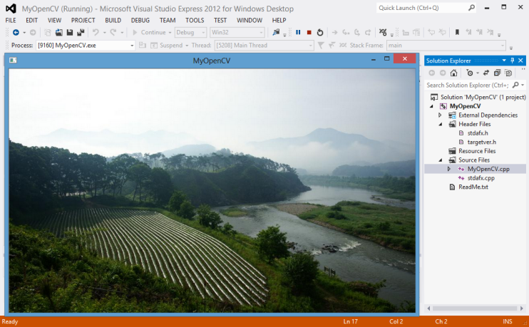
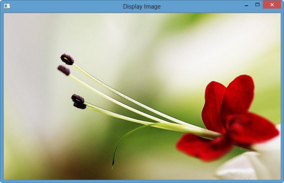
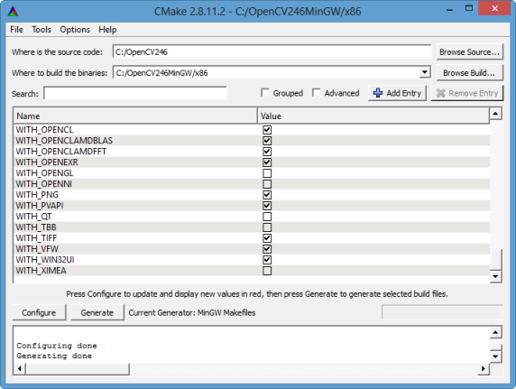
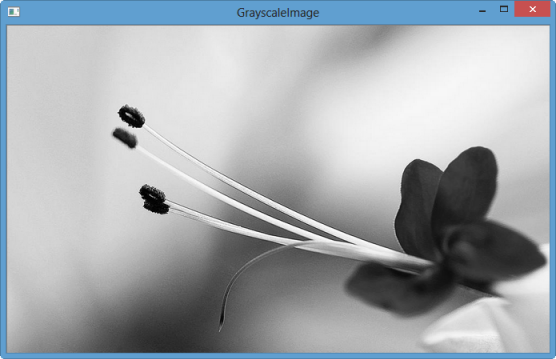

C++ OpenCV
OpenCV 3 Tutorial
image & video processing
Installing on Ubuntu 13
Mat(rix) object (Image Container)
Creating Mat objects
The core : Image - load, convert, and save
Smoothing Filters A - Average, Gaussian
Smoothing Filters B - Median, Bilateral
OpenCV 3 image and video processing with Python
OpenCV 3 with Python
Image - OpenCV BGR : Matplotlib RGB
Basic image operations - pixel access
iPython - Signal Processing with NumPy
Signal Processing with NumPy I - FFT and DFT for sine, square waves, unitpulse, and random signal
Signal Processing with NumPy II - Image Fourier Transform : FFT & DFT
Inverse Fourier Transform of an Image with low pass filter: cv2.idft()
Image Histogram
Video Capture and Switching colorspaces - RGB / HSV
Adaptive Thresholding - Otsu's clustering-based image thresholding
Edge Detection - Sobel and Laplacian Kernels
Canny Edge Detection
Hough Transform - Circles
Watershed Algorithm : Marker-based Segmentation I
Watershed Algorithm : Marker-based Segmentation II
Image noise reduction : Non-local Means denoising algorithm
Image object detection : Face detection using Haar Cascade Classifiers
Image segmentation - Foreground extraction Grabcut algorithm based on graph cuts
Image Reconstruction - Inpainting (Interpolation) - Fast Marching Methods
Video : Mean shift object tracking
Machine Learning : Clustering - K-Means clustering I
Machine Learning : Clustering - K-Means clustering II
Machine Learning : Classification - k-nearest neighbors (k-NN) algorithm
The OpenCV Reference Manual, Release 2.4.3(pdf)
Meet Computer Vision professionals from OpenCV.org at LinkedIn OpenCV.org
In this chapter, I tried to install OpenCV on Windows 8 and Linux Fedora 18 using Visual Studio and Eclipse (Kepler/Juno). But not all of them was satisfactory, and got mixed results.
- Visual studio 2012 - 32 bit OpenCV - OK
- Visual studio 2012 - 64 bit OpenCV - Not tried
- Eclipse Kepler (Windows 8) - 32 bit OpenCV with precompiled - Not satisfactory (needed some additional work)
- Eclipse Kepler (Windows 8) - 32 bit OpenCV compiled with MinGW by myself - OK
- Eclipse Kepler (Windows 8) - 64 bit OpenCV with MinGW64 - Not successful (I will try again later)
- Eclipse Juno on Fedora 18 - 32 bit OpenCV - OK
Here are the steps to run the first OpenCV program on Windows 8 using Visual Studio 2012 (vc11).
- Install OpevCV - C:\opencv
- Setup the Windows environment
- Set Environment Variable : OPENCV_DIR = C:\OpneCV246\build\
- Set Path = %OPENCV_DIR%\x86\vc11\bin
- Visual Studio setup
- Configuration Properties -> C/C++ -> General -> Additional Include Directories
$(OPENCV_DIR)\include\opencv;$(OPENCV_DIR)\include - Linker -> General -> Additional Library Directories
$(OPENCV_DIR)\x86\vc11\lib - Linker ->Input
Put all the libraries from C:\opencv\build\x86\vc11\lib
such as opencv_calib3d246.lib, opencv_calib3d246d.lib ...
- Configuration Properties -> C/C++ -> General -> Additional Include Directories
- Run the code shown below, then we'll have the picture on OpenCV window.
- Note: I had several errors but most of them were related to some mistakes made during the steps listed here. So, if something wrong during the compile/run, we need to check if we got all the steps right rather than trying to fix obscure errors.
I'll try x64 again later.
#include <cv.h>
#include <highgui.h>
int main()
{
IplImage* img = cvLoadImage("C:/MyOpenCV/Images/MyPic.png");
cvNamedWindow("MyOpenCV");
cvShowImage("MyOpenCV", img);
cvWaitKey(0);
cvDestroyWindow("MyOpenCV");
cvReleaseImage(&img;);
return 0;
}
Compile and run, then we get the picture as below.

I had some issues on this. Probably related to 32/64. My Machine is x64 amd but I ended up using x86.
- Install Eclipse Kepler.
- CDT plugin
- Help->Install New Sofware...
- In Install popup, put this url : http://download.eclipse.org/tools/cdt/releases/kepler
which we can get from http://www.eclipse.org/cdt/downloads.php. - Click "Add...", then type in this tag: CDT_8_2_0
- Install MinGW
In my case, I put it under "eclipse" directory. - Install OpenCV2.4.6.
- Project Properties->C/C++ General->Paths and Symbols
- In Includes tab, add this: C:\opencv\build\include
- In Libraries tab, add this:
libopencv_core246, libopencv_highgui246, libopencv_imgproc246 - In Library Paths tab, add this: C:\opencv\build\x86\mingw\lib
- System Environment setting:
C:\eclipse\MinGW\bin;C:\opencv\build\x86\mingw\bin;
The sample program looks like this:
#include <opencv/highgui.h>
#include <opencv/cv.h>
#include <iostream>
using namespace std;
using namespace cv;
int main( int argc, char** argv )
{
Mat image;
image = imread( argv[1], CV_LOAD_IMAGE_COLOR );
if( argc != 2 || !image.data )
{
printf( "No image data \n" );
return -1;
}
namedWindow( "Display Image", CV_WINDOW_AUTOSIZE );
imshow( "Display Image", image );
waitKey(0);
return 0;
}
Build script:
13:31:57 **** Rebuild of configuration Debug for project DisplayImage **** Info: Internal Builder is used for build g++ "-IC:\\opencv\\build\\include" -O0 -g3 -Wall -c -fmessage-length=0 -o "src\\DisplayImage.o" "..\\src\\DisplayImage.cpp" g++ "-LC:\\opencv\\build\\x86\\mingw\\lib" -o DisplayImage.exe "src\\DisplayImage.o" -llibopencv_core246 -llibopencv_highgui246 -llibopencv_imgproc246 13:32:01 Build Finished (took 4s.116ms)
Run it either from IDE or via prompt window using flower.png:
$ DisplayImage C:\TEST\flower.png

Note
- Could not make 64bit working.
- I needed some help to setup environment:
- Run mingw64env.cmd file whose contents looks like this:
@title MinGW-w64 64-bit GCC build environment @echo Setting up environment for MinGW-w64 GCC 64-bit... @set PATH=%CD%\bin;%PATH% @call cmd - After that, run the following command on the prompt window:
gcc -Wl,--add-stdcall-alias -I"C:\Program Files\Java\jdk1.7.0_21\include" -shared -o macro_NativeMacropaco-PC.dll macro_NativeMacro.c -m64
- Run mingw64env.cmd file whose contents looks like this:
Since I had numerous issues with pre-compiled version of OpenCV, in this section, I'll build it using CMake. The detailed process is well documented in stackoverflow.
- Download and install MinGW and add to the system PATH with C:/eclipse/MinGW/bin
- Download cmake from http://www.cmake.org and install it
- Download OpenCV2.4.6 Windows version
- Install/unzip Opencv to C:\OpenCV246\ (README,index.rst and CMakeLists.txt are there with all subfolders)
- Run CMake GUI tool, then
- Choose C:\OpenCV246\ as source
- Choose the destination, C:\OpenCV246MinGW\x86 where to build the binaries
- Press Configure button, choose MinGW Makefiles as the generator. There are some red highlights in the window, choose options as you need.
- Press the Configure button again. Configuring is now done.
- Press the Generate button.

- Exit the program when the generating is done.
- Exit the Cmake program.
- Run the command line mode (cmd.exe) and go to the destination directory C:\OpenCV246MinGW\x86
- Type mingw32-make. You will see a progress of building binaries. If the command is not found, you must make sure that the system PATH is added with C:/eclipse/MinGW/bin. The build continues according the chosen options to a completion.
- Add the destination's bin directory, C:\OpenCV246MinGW\x86\bin, to System PATH
- RESTART COMPUTER
- Go to the Eclipse CDT IDE, create a C++ program using the sample OpenCV code.
- Go to Project > Properties > C/C++ Build > Settings > GCC C++ Compiler > Includes, and add the source OpenCV folder C:\OpenCV246\build\include
- Go to Project > Properties > C/C++ Build > Settings > MinGW C++ Linker > Libraries, and add to the Libraries (-l) one by one: opencv_calib3d246 opencv_contrib246 opencv_core246 opencv_features2d246 opencv_flann246 opencv_gpu246 opencv_highgui246 opencv_imgproc246 opencv_legacy246 opencv_ml246 opencv_nonfree246 opencv_objdetect246 opencv_photo246 opencv_stitching246 opencv_video246 opencv_videostab246
- Add the built OpenCV library folder, C:\OpenCV246MinGW\x86\lib to Library search path (-L).
References on MinGW64: http://qt-project.org/wiki/MinGW-64-bit.
OpenCV install: we need to install opencv-devel as well.
- opencv.x86_64 0:2.4.5-1.fc18: "sudo yum install opencv"
- opencv-devel.x86_64 0:2.4.5-1.fc18: "sudo yum install opencv-devel"
Eclipse
- Go to Project->Properties
-
In C/C++ Build, click on Settings. At the right, choose the Tool Settings Tab. Here we will enter the
headers and libraries info:
- To find opencv files: type in "pkg-config --cflags opencv", then in my system, it is "-I/usr/include/opencv"
- In GCC C++ Compiler, go to Includes. In Include paths(-l) we should include the path of the folder where opencv was installed. In my system, this is /usr/include/opencv.
- Now go to GCC C++ Linker, there we have to fill two spaces:
First in Library search path (-L) we have to write the path to where the opencv libraries reside, in my case the path is:
/usr/lib64
Then in Libraries(-l) add the OpenCV libraries that we may need. Usually just the 3 first on the list below are enough (for simple applications):
opencv_core opencv_imgproc opencv_highgui opencv_ml opencv_video opencv_features2d opencv_calib3d opencv_objdetect opencv_contrib opencv_legacy opencv_flannTo find out where the libs are:
$ pkg-config --libs opencv -lopencv_calib3d -lopencv_contrib -lopencv_core -lopencv_features2d -lopencv_flann -lopencv_highgui -lopencv_imgproc -lopencv_legacy -lopencv_ml -lopencv_objdetect -lopencv_photo -lopencv_stitching -lopencv_superres -lopencv_ts -lopencv_video -lopencv_videostab
- Hit OK.
- Now, the project should be ready to be built. For this, go to Project->Build all.
This is based on Operations with images.
Load an image from a file:
Mat img = imread(filename, CV_LOAD_IMAGE_COLOR);
If you read a jpg (or png) file, a 3 channel image is created by default. If you need a grayscale image, use:
Mat img = imread(filename, CV_LOAD_IMAGE_GRAYSCALE); ... namedWindow( "GrayscaleImage", CV_WINDOW_AUTOSIZE ); imshow( "GrayscaleImage", image );

More to come...
Ph.D. / Golden Gate Ave, San Francisco / Seoul National Univ / Carnegie Mellon / UC Berkeley / DevOps / Deep Learning / Visualization